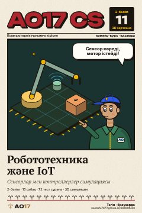

AO17 CS курсы / 2-бөлім: 3D зертхана / Робототехника және IoT

Робототехника және IoT · 14-сабақ · ≈15 мин · 2 қадам · 6 сұрақ
Батырманың дірілін басу (debounce)
Debouncing a Button
Бір басу: он бес басу? Механикалық контактінің дірілі, debounce терезесі және оның бағасы.
1Контакт дірілі
Идея
Механикалық батырманың ішінде екі металл пластина. Басқанда олар бірден тұйықталмайды: бірнеше миллисекунд бір-біріне соғылып, секіреді (contact bounce). Адамға бұл көрінбейді, ал 1 кГц-пен оқитын микроконтроллер әр секіруді жаңа басу деп санайды.
Есептеп көрейік
1 секунд, 1 мс сайын оқу, үш нақты басу (екеуі жылдам, қос басу сияқты). Әр басу мен әр жіберуде контакт бірнеше рет ауысады.
- Debounce-сыз: 15 басу саналды.
- Нақтысы: 3.
Нақты әлемде
Лифт батырмасы, клавиатура, микротолқынды пештің таймері: «бір басқанда екі рет істеді» деген ақаудың көбі осы. Кейбір арзан тышқандардағы «өздігінен қос шерту» де тозған контактінің дірілі.
Діріл ұзақтығы батырмаға байланысты: жаңа тактильді батырмада 1-5 мс, ескі не арзан тумблерде 20 мс-қа дейін.
Енді сен
Debounce-сыз іске қос, сигналдағы ұсақ «тістерге» қара.
Алдымен болжа
Микроконтроллер батырманы 1 кГц-пен оқып, әр «0-ден 1-ге» ауысуды басу деп санайды. Батырма үш рет басылды. Неше басу саналады?
Жауабы мен түсіндірмесі
Дұрыс жауап: 3-тен әлдеқайда көп: контакт әр басуда бірнеше рет «секіреді»
Металл контакт тұйықталғанда және ажырағанда бірнеше миллисекунд дірілдейді. Әр діріл: жаңа «басу». Модельде 3 басу 15 болып саналды.
Өзіңді тексер
Contact bounce дегеніміз не?
Жауабы мен түсіндірмесі
Дұрыс жауап: Тұйықталған сәттегі контактінің бірнеше миллисекундтық дірілі
Механикалық пластиналар бірден тоқтамай, бірнеше рет соғылады.
Неге адам дірілді байқамайды, ал микроконтроллер байқайды?
Жауабы мен түсіндірмесі
Дұрыс жауап: Діріл бірнеше миллисекунд, ал микроконтроллер әр миллисекунд сайын оқиды
Адамға 5 мс: бір сәт. 1 кГц-тегі оқуға: бес жеке өлшем.
Модельде үш басу debounce-сыз неше болып саналды?
Жауабы мен түсіндірмесі
Дұрыс жауап: 15
Әр басуда контакт бірнеше рет «0-ден 1-ге» ауысты.
2Терезе
Debounce
Сигналға бірден сенбейміз: жаңа деңгей W мс бойы өзгермей тұрса ғана «басылды» не «жіберілді» деп шешеміз. Қысқа дірілдер W-дан қысқа, олар сүзіледі.
Есептеп көрейік
- W = 10 мс: дәл 3 басу.
- W = 60 мс: тек 1: қос басудың 50 және 60 мс-тық басулары терезеге жетпеді.
- Әр W басуды W мс-қа кешіктіреді.
Яғни W: діріл ұзақтығынан ұзақ, бірақ ең қысқа нақты басудан қысқа. Әдетте 10-20 мс.
Тағы тәсілдер
- Аппараттық: RC сүзгі (резистор мен конденсатор) және Шмитт триггері: Game 11-сабақтағы гистерезистің электрондық нұсқасы.
- Үзіліс (interrupt) емес, таймер: әр діріл үзіліс тудырса, процессор оларға уақытын шашады. Батырманы әр 1-5 мс сайын таймермен оқу қарапайым әрі сенімді.
- Кітапханалар: Arduino-дағы Bounce2, ESP-IDF-тегі button component.
Енді сен
10 мс терезені сына, сосын 60 мс. Қай басулар жоғалғанына қара.
3D симуляцияда орында
- Терезені тап: дәл 3 басу
- Тым ұзақ терезе: жылдам қос басу жоғалады
Алдымен болжа
Debounce: жаңа деңгейге тек ол W миллисекунд тұрақты тұрғанда ғана сенеміз. W-ны 10 мс-тан 60 мс-қа үлкейтсек, қос басу (50 мс және 60 мс) не болады?
Жауабы мен түсіндірмесі
Дұрыс жауап: Қысқа басулар W-дан қысқа: олар мүлде саналмайды
60 мс терезеге 50 мс басу ешқашан жетпейді. Модельде тек 1 басу саналды. Debounce-тың бағасы: кешігу және қысқа басулардың жоғалуы.
Өз сөзіңмен түсіндір
Неге бір басу бірнеше рет саналды және уақыт терезесі мұны қалай түзетеді?
Жақсы түсіндірмеде болатын ойлар
- контактілер бірнеше миллисекунд діріл береді
- әр өзгерісті басу деп санадық
- сигнал тұрақты тұрғанда ғана қабылдаймыз
Өзіңді тексер
Debounce терезесін қалай таңдаған дұрыс?
Жауабы мен түсіндірмесі
Дұрыс жауап: Діріл ұзақтығынан ұзақ, ең қысқа нақты басудан қысқа
Тым қысқа: дірілді өткізеді. Тым ұзақ: нақты басуларды жоғалтып, кешіктіреді.
Debounce-тың бағасы қандай?
Жауабы мен түсіндірмесі
Дұрыс жауап: Әр басу терезенің ұзақтығына кешігеді
Ойын контроллерлерінде бұл маңызды: 20 мс кешігу сезіледі.
Аппараттық debounce-та Шмитт триггері не істейді?
Жауабы мен түсіндірмесі
Дұрыс жауап: Екі түрлі табалдырықпен ауысады: шулы сигналдан таза ауысу жасайды
Бұл гистерезис: Game 11-сабақтағы күзетші сияқты, екі шек шуды жұтады.
Сабақ AO17 командасының INSIDE TECH 3D платформасынан алынған: дәріс, тест және 3D симуляция - бір сабақтың бөліктері. Симуляция осы сайттың ішінде ашылады, прогресі «Менің шаңырағым» бетіне қосылады.